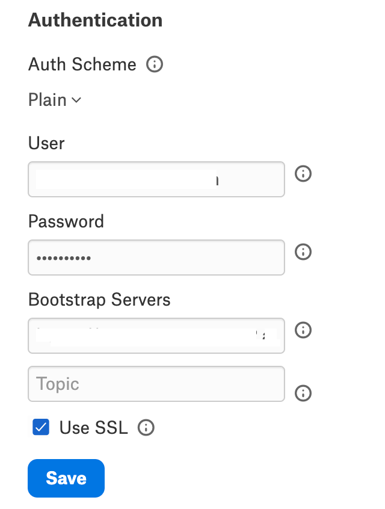

Configure Connection to Data Source¶
Alation Cloud Service Applies to Alation Cloud Service instances of Alation
Customer Managed Applies to customer-managed instances of Alation
After you install the Kafka OCF connector, you must configure the connection to the Kafka data source.
The various steps involved in configuring the Kafka data source connection setting are:
Provide Access¶
Go to the Access tab on the Settings page of your Snowflakes data source, set the data source visibility using these options:
Public Data Source — The data source is visible to all users of the catalog.
Private Data Source — The data source is visible to the users allowed access to the data source by Data Source Admins.
You can add new Data Source Admin users in the Data Source Admins section.
Connect to Data Source¶
To connect to the data source, you must perform these steps:
Application Settings¶
Specify Application Settings if applicable. Save the changes after providing the information by clicking Save.
Specify Application Settings if applicable. Click Save to save the changes after providing the information.
Parameter |
Description |
|---|---|
BI Connection Info |
This parameter is used to generate lineage between the current data source and another source in the catalog, for example a BI source that retrieves data from the underlying database. The parameter accepts host and port information of the corresponding BI data source connection. Use the following format: You can provide multiple values as a comma-separated list:
Find more details in BI Connection Info. |
Disable Automatic Lineage Generation |
Select this checkbox to disable automatic lineage generation from QLI, MDE, and Compose queries. By default, automatic lineage generation is enabled. |
Connector Settings¶
Datasource Connection¶
Not applicable.
Authentication¶
Specify Authentication Settings. Save the changes after providing the information by clicking Save.
{kind=link}
Parameter |
Description |
|---|---|
Auth Scheme |
Select the auth scheme used for authentication with the Kafka broker from the dropdown.
Any of the following auth schemes can be selected if connecting to Azure Event Hubs:
See Appendix - Authentication Schemes to know more about the configuration fields required for each authentication scheme. |
User |
Specify the username to authenticate Kafka. |
Passwords |
Specify the password that authenticates Kafka. |
Bootstrap Servers |
Specify the address of the Kafka Bootstrap Servers. All the Azure auth types must set this property in addition to the auth-specific properties. Set this to |
Topic |
Specify the topic used for read and write operations. |
Use SSL |
Select this check box to use SSL authentication. This check box will be automatically selected if SSLCertificate is selected in Auth Scheme. |
Connection¶
Specify Connection properties. Save the changes after providing the information by clicking Save.
{kind=link}
Parameter |
Description |
|---|---|
Consumer Group ID |
Specify the group that consumers created by the driver should belong to. |
Auto Commit |
Select the checkbox if the Kafka consumer should auto-commit after each poll. |
Azure Authentication¶
Specify Azure Authentication properties. Save the changes after providing the information by clicking Save.
{kind=link}
Parameter |
Description |
|---|---|
Azure Tenant |
Specify the Microsoft online tenant used to access data. If not specified, your default tenant is used. |
Azure Resource |
Specify the Azure Active resource to authenticate (used during Azure OAuth exchange). |
OAuth¶
Specify OAuth properties. Save the changes after providing the information by clicking Save.
{kind=link}
Parameter |
Description |
|---|---|
Initiate OAuth |
Select any of the property from the dropdown to initiate the process to obtain or refresh the OAuth access token when you connect.
|
OAuth Client Id |
Specify the client ID assigned when you register your application with an OAuth authorization server. |
OAuth Client Secret |
Specify the client secret assigned when you register your application with an OAuth authorization server. |
OAuth Access Token |
Specify the access token for connecting using OAuth. |
OAuth Verifier |
The verifier code returned from the OAuth authorization URL. |
OAuth Refresh Token |
The OAuth refresh token for the corresponding OAuth access token. |
OAuth Expires In |
Specify the lifetime in seconds of the OAuth AccessToken. |
OAuth Token Timestamp |
The Unix epoch timestamp in milliseconds when the current Access Token was created. |
Kerberos¶
Specify Kerberos properties. Save the changes after providing the information by clicking Save.
{kind=link}
Parameter |
Description |
|---|---|
Kerberos Keytab File |
The Keytab file contains your pairs of Kerberos principals and encrypted keys. |
Kerberos SPN |
Specify the service principal name (SPN) for the Kerberos Domain Controller. |
Kerberos Service Name |
Specify the name of the Kerberos service that you want to authenticate with. |
Use Kerberos Ticket Cache. |
Select this checkbox to use a ticket cache with the logged-in user instead of a keytab file. |
SSL¶
Note
The SSL authentication is not supported in this release. However, you can specify the SSL certificate content for an SSL handshake if the cluster/broker on Kafka is using SSL.
Specify SSL properties. Save the changes after providing the information by clicking Save.
{kind=link}
Parameter |
Description |
|---|---|
SSL Server Cert |
Specify the SSL server certificate used to validate to the Kafka broker. |
SSL Server Cert Type |
Select the format of the SSL server certificate used to verify the Kafka broker from the drop-down:
|
SSL Server Cert Password |
Specify the password used to decrypt the certificate in the SSL Server Cert. Leave this field blank if the certificate is not password protected. |
SSL Client Cert |
Specify the SSL client certificate used to connect to the Kafka broker. |
SSL Client Cert Type |
Select the format of the SSL client certificate used to connect to the Kafka broker from the drop-down:
|
SSL Client Cert Password |
Specify the password used to decrypt the certificate in SSL Client Cert. |
SSL Identification Algorithm |
Specify the endpoint identification algorithm used by the Kafka data provider client app to validate the server hostname. |
Schema Registry¶
Specify Schema Registry properties. Save the changes after providing the information by clicking Save.
{kind=link}
Parameter |
Description |
|---|---|
Registry Url |
Specify the server for the schema registry. When this property is specified, the driver will read the Apache Avro schema from the server. |
Registry Type |
Select the type of schema specified for the specific topic.
|
Registry Service |
Select the schema registry service for working with topic schemas.
|
Registry Auth Scheme |
Select the auth scheme used to authenticate to the schema registry.
|
Registry User |
Specify the username to authorize with the server specified in Registry Url. |
Registry Password |
Specify the password to authorize with the server specified in Registry Url. |
Registry Client Cert |
Specify the TLS/SSL client certificate store for SSL Client Authentication with the schema registry. |
Registry Client Cert Type |
Select the type of key store used by the TLS or SSL client certificate specified in Registry Client Cert. |
Registry Client Cert Password |
Specify the password for the TLS or SSL client certificate given in Registry Client Cert. |
Registry Client Cert Subject |
Specify the subject of the TLS or SSL client certificate given in Registry Client Cert. |
Registry Version |
Specify the version of the schema read from Registry Url for the specified topic. |
Registry Server Cert |
Specify the certificate to be accepted from the schema registry when connecting using TLS or SSL. |
Firewall¶
Specify Firewall properties. Save the changes after providing the information by clicking Save.
{kind=link}
Parameter |
Description |
|---|---|
Firewall Type |
Specify the protocol the proxy-based firewall uses for traffic tunneling.
|
Firewall Server |
Specify the hostname, DNS name, or IP address of the proxy-based firewall. |
Firewall Port |
Specify the TCP port of the proxy-based firewall. |
Firewall User |
Specify the user name to authenticate with the proxy-based firewall. |
Firewall Password |
Specify the password to authenticate with the proxy-based firewall. |
Proxy¶
Specify Proxy properties. Save the changes after providing the information by clicking Save.
{kind=link}
Parameter |
Description |
|---|---|
Proxy Auto Detect |
Select the checkbox to use the system proxy settings. This takes precedence over other proxy settings, so do not select this checkbox to use custom proxy settings. |
Proxy Server |
Specify the hostname or IP address of a proxy to route HTTP traffic through. |
Proxy Port |
Specify the TCP port the Proxy Server proxy is running on. |
Proxy Auth Scheme |
Select the authentication type to authenticate to the Proxy Server from the drop-down:
|
Proxy User |
Specify the user name to authenticate the ProxyServer. |
Proxy Password |
Specify the password of the Proxy User. |
Proxy SSL Type |
Select the SSL type when connecting to the ProxyServer from the drop-down:
|
Proxy Exceptions |
Specify the list (separated by semicolon) of destination hostnames or IPs that are exempt from connecting through the Proxy Server. |
Logging¶
Specify Logging properties. Save the changes after providing the information by clicking Save.
{kind=link}
Parameter |
Description |
|---|---|
Verbosity |
Specify the verbosity level between 1 to 5 to include details in the log file. |
Log Modules |
Includes the core modules in the log files. Add module names separated by a semi-colon. By default, all modules are included. |
Max Log File Count |
Specify the maximum file count for log files. After the limit, the log file is rolled over, and time is appended at the end of the file. The oldest log file is deleted. Maximum Value: 2 Default: -1. A negative or zero value indicates unlimited files. |
View the connector logs in Admin Settings > Server Admin > Manage Connectors > Kafka OCF connector.
Schema¶
Specify Schema properties. Save the changes after providing the information by clicking Save.
{kind=link}
Parameter |
Description |
|---|---|
Browsable Schemas |
Specify the schemas as a subset of the available schemas in a comma-separated list. For example, BrowsableSchemas=SchemaA,SchemaB,SchemaC. |
Tables |
Specify the fully qualified name of the table as a subset of the available tables in a comma-separated list. Each table must be a valid SQL identifier that might contain special characters escaped using square brackets, double quotes, or backticks. For example, Tables=TableA,[TableB/WithSlash],WithCatalog.WithSchema.`TableC With Space`. |
Views |
Specify the fully qualified name of the Views as a subset of the available tables in a comma-separated list. Each view must be a valid SQL identifier that might contain special characters escaped using square brackets, double quotes, or backticks. For example, Views=ViewA,[ViewB/WithSlash],WithCatalog.WithSchema.`ViewC With Space`. |
Miscellaneous¶
Specify Miscellaneous properties. Save the changes after providing the information by clicking Save.
Parameter |
Description |
|---|---|
Aggregate Messages |
Select this checkbox to return the message as a whole string. If the checkbox is not selected, the result will be parsed and detected fields will appear in the result set. |
Batch Size |
Specify the maximum size of each batch operation to submit. When BatchSize is set to a value greater than 0, the batch operation will split the entire batch into separate batches of size BatchSize. The split batches will then be submitted to the server individually. This is useful when the server has limitations on the request size that can be submitted. Setting BatchSize to 0 will submit the entire batch as specified. |
Compression Type: |
Select the data compression type from the dropdown. Batches of data will be compressed together.
|
Connection LifeTime |
The maximum lifetime of a connection in seconds. Once the time has elapsed, the connection object is disposed. The default is 0, indicating no limit to the connection lifetime. |
Consumer Properties |
Additional options used to configure Kafka consumers. The provider exposes several Kafka consumer configuration values directly as connection properties. Internally, these are all mapped into properties passed to the Kafka client libraries. If the provider does not expose an option for the consumer
configuration, it can be set here. This option takes a
connection string value and passes all its options directly
to the consumer. For example, |
Create Table Partitions |
The number of partitions assigned to a topic created with CREATE TABLE. When executing a CREATE TABLE statement, the provider creates a new empty topic. By default, the provider creates this new topic with one partition. You can create topics with more partitions by changing this setting. This can be useful if you plan on having multiple consumers process the messages on this topic. |
Create Table Replication Factor |
The number of replicas assigned to a topic created with CREATE TABLE. When executing a CREATE TABLE statement, the provider creates a new empty topic. By default, the provider creates this topic with a replication factor of 3. |
Enable Idempotence |
Select this checkbox to ensure messages are delivered in the correct order and without duplicates. |
Flatten Arrays |
Specify the number of elements you want to return from nested arrays. By default, nested arrays won’t appear if the Type Detection Scheme is set to SchemaRegistry. The Flatten Arrays property can be used to flatten the elements of nested arrays into their columns. |
Generate Schema Files |
Select the user preference for when schemas should be generated and saved.
|
Maximum Batch Size |
Specifies the maximum batch size to gather before sending a request. |
Max Rows |
Limits the number of rows returned when no aggregation or GROUP BY is used in the query. This takes precedence over LIMIT clauses. |
Message Key Column |
If specified, the message key sent to Apache Kafka will be read from this column. |
Message KeyType |
Select the message key type of the pertinent column if the Message Key Column is specified. |
Offset Reset Strategy |
Select an offset for the consumer group. Earliest - It will consume any unconsumed messages, including any message produced before the lifetime of the consumer group. Latest - It will only consume messages produced after creating the consumer group. |
Other |
This field is for properties that are used only in specific use cases. |
Page size |
Specify the maximum number of rows to fetch from Kafka. The provider batches read to Kafka to reduce overhead. Instead of fetching a single row from the broker every time a query row is read, the provider will read multiple rows and save them to the resultset. Only the first row read from the resultset must wait for the broker. Later rows can be read out of this buffer directly. This option controls the maximum number of rows the provider stores on the resultset. Setting this to a higher value will use more memory but requires waiting on the broker less often. Lower values will give lower throughput while using less memory. |
Pool Idle Timeout |
Specify the allowed idle time for a connection before it is closed. The default value is 60 seconds. |
Pool Max Size |
The maximum connections in the pool. The default is 100. |
Pool Min Size |
The minimum number of connections in the pool. The default is 1. |
Pool Wait Time |
The max seconds to wait for an available connection. The default value is 60 seconds. |
Produce Meta |
Select this checkbox to send a meta message while producing the outgoing message. This option is only used if Serialization Format is set to CSV. |
Producer Properties |
Additional options used to configure Kafka producers. |
Pseudo Columns |
This property indicates whether or not to include pseudo columns as columns to the table. |
Read Duration |
Specify the duration for which additional messages are allowed. |
Read only |
Select this checkbox to enforce read-only access to Kafka from the provider. |
Row Scan Depth |
Specify the maximum number of messages to scan for the columns in the topic. Setting a high value may decrease performance. Setting a low value may prevent the data type from being determined properly. |
Serialization Format |
Select the serialization format from the dropdown:
|
Timeout |
Specify the value in seconds until the timeout error is thrown, canceling the operation. |
Type Detection Scheme |
Select the type detection scheme from the dropdown:
|
Use Confluent Avro Format |
Select this checkbox to specify how Avro data should be formatted during an INSERT. |
Use Connection Pooling |
Select this checkbox to enable connection pooling. |
User Defined Views |
Specify the file path pointing to the JSON configuration file containing your custom views. |
Validate Registry Topics |
Select this checkbox to validate schema registry topics against the Kafka broker. Note This is applicable only when the Type Detection Scheme is set to SchemaRegistry. |
Obfuscate Literals¶
Obfuscate Literals — Enable this toggle to hide the details of the queries in the catalog page that are ingested via QLI or executed in Compose. Disabled by default.
Test Connection¶
Under Test Connection, click Test to validate network connectivity.
Note
You can only test connectivity after providing the authentication information.
Metadata Extraction¶
This connector supports metadata extraction (MDE) based on default queries built in the connector code but does not support custom query-based MDE. You can configure metadata extraction on the Metadata Extraction tab of the settings page.
For more information about the available configuration options, see Configure Metadata Extraction for OCF Data Sources.
Compose¶
For details about configuring the Compose tab of the Settings page, refer to Configure Compose for OCF Data Sources.
Sampling and Profiling¶
Sampling and profiling is supported. For details, see Configure Sampling and Profiling for OCF Data Sources.
Query Log Ingestion¶
Not supported.
Troubleshooting¶
Refer to Troubleshooting for information about logs.